Cinema e televisão
Cartazes e fotogramas de filmes e programas em que participou.
Cinema
Por ordem cronológica. Também participou em O Vestido Cor de Fogo (1985, de Lauro António; Coronel Valadares) e em Vertigem (1992, póstumo, de Leandro Ferreira; Tito Guedes). Filmografia em verificação nas bases do cinema português.
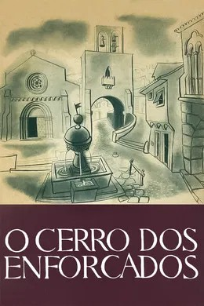
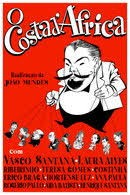
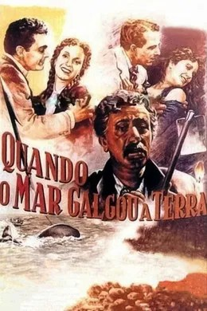
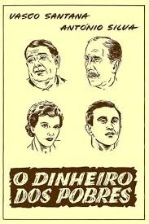
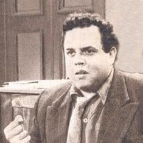
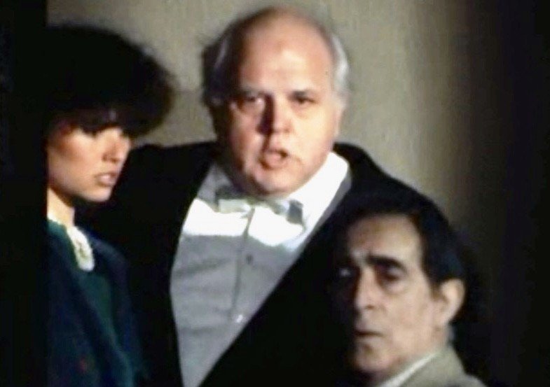
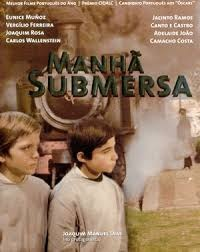
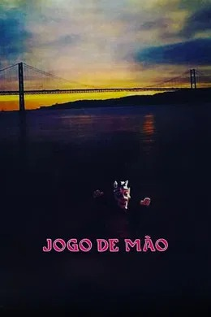
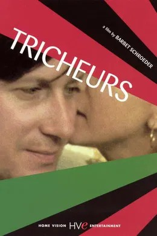
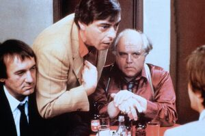
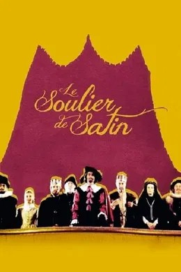
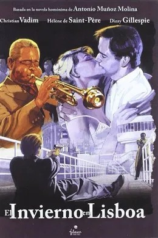
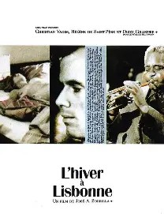
Televisão
Participou também em teleteatros e séries da RTP: O Improviso de Barba-Azul e Quanto Importa Ser Leal (1959), Manhã Submersa (versão televisiva, 1979) e Iratan e Iracema: Os Meninos Mais Malcriados do Mundo (1987), entre outros. Lista em verificação. Ver também a entrevista Perfil (RTP, 1978).
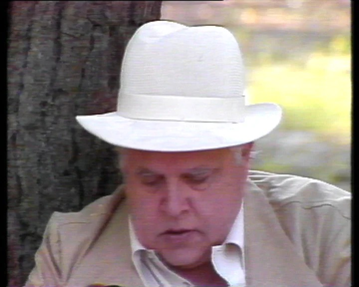
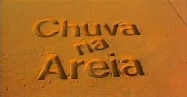
Cartazes e fotogramas são reproduzidos para documentar a carreira de Carlos Wallenstein; os direitos pertencem aos respectivos titulares. A lista vai crescendo à medida que a filmografia é confirmada. Se detiver direitos sobre alguma imagem e preferir que seja retirada, escreva-nos através de Contactos. Ver também Direitos.